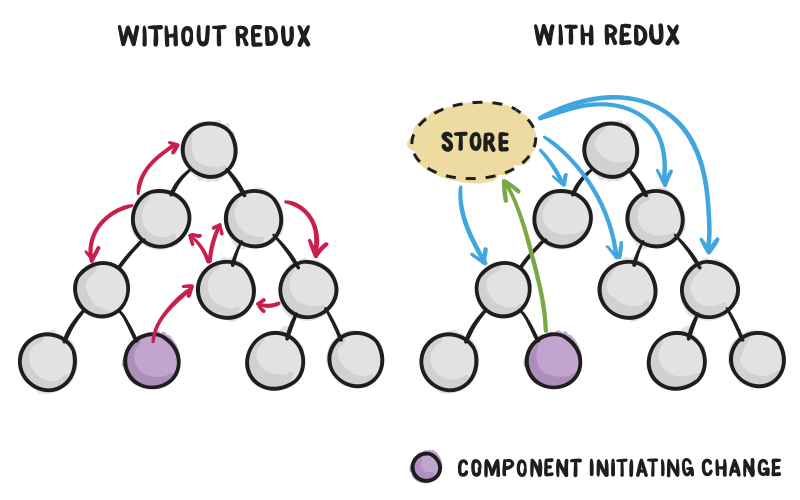

Эффективное управление состоянием в React-приложениях
Цели урока
Понять основные концепции Redux
Научиться интегрировать Redux с React-приложением
Создать простое приложение с использованием Redux за 5-10 минут
Ознакомиться с инструментами для разработки и отладки Redux-приложений
Как по-умолчанию передается состояние?
props
А если нужно передать "родителю" или "брату"?
Проблема

Что такое Redux?
Redux — это библиотека для управления состоянием приложения.
Основана на принципах однонаправленного потока данных.
Предоставляет предсказуемую структуру для управления состоянием.
Независимая от UI-библиотек, но часто используется с React.
Зачем использовать Redux с React?
Упрощает управление состоянием в крупных приложениях.
Позволяет легко делиться состоянием между компонентами.
Улучшает масштабируемость и поддерживаемость кода.
Облегчает отладку и тестирование благодаря предсказуемости состояния.
Основные концепции Redux:
Store: Единое хранилище состояния всего приложения.
Actions: Объекты, описывающие изменения состояния (с типом и полезной нагрузкой).
Reducers: Функции, которые определяют, как состояние изменяется в ответ на действия.
Dispatch: Метод для отправки действий в хранилище.
Архитектура Redux:
Однонаправленный поток данных:
Компоненты отправляют действия (Actions).
Reducers обрабатывают действия и обновляют состояние.
Store обновляет состояние и уведомляет подписанные компоненты.
Неизменяемость состояния:
Каждое изменение состояния возвращает новый объект состояния.